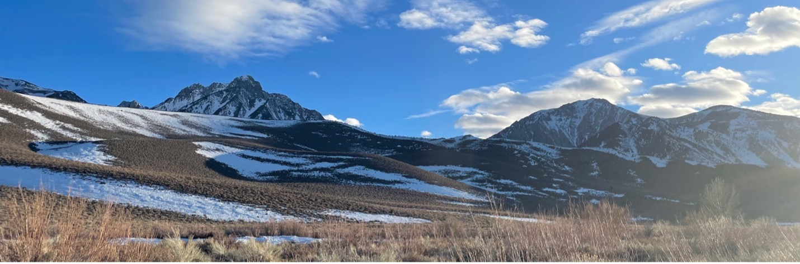
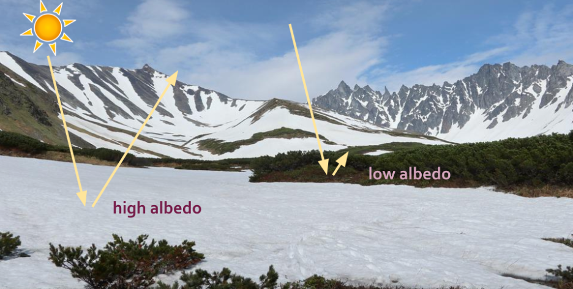

 For the past 6 months I’ve worked with the Snow Today capstone group. Our initial goal was to develop web-based visualizations of snow cover and albedo data. We worked with output files from a model called SPIReS (Snow Property Inversion from Remote Sensing) that was developed by researchers with the UCSB Earth Research Institute (Bair 2021). SPIReS uses MODIS satellite imagery to estimate snow cover and albedo. MODIS (Moderate Resolution Imaging Spectroradiometer) is a NASA satellite instrument that has collected daily data on Earth’s land, oceans, and atmosphere since the year 2000. MODIS also collects data on the cryosphere, the frozen parts of earth covered by snow and ice. The Snow Today group quickly began brainstorming visualization and website platform strategies, but soon realized we had to take a step back. We had no idea how to even open the datasets.
The datasets used in the Snow Today project could be improved by incorporating FAIR data principles (Wilkinson 2016). FAIR stands for Findable, Accessible, Interoperable, and Reusable. The metadata associated with the snow cover and albedo datasets was hard to find and once it was found, it was hard to interpret. The metadata told us the map projection of the data, but this information wasn’t attached in a standard format that could be recognized by common mapping software and spatial packages. This meant that we couldn’t plot the data on a map in the correct location. This also meant that researchers or water managers faced a significant barrier if trying to use the dataset to learn about their local water supply.
As we worked through the challenges of the snow cover and albedo datasets, our goals shifted towards creating an open-source workflow to make the data more meaningfully open. While the data used for our project is available online for anyone to download (if you know where to find it), insights can be hard or near impossible to gather without specialized training. After many conversations with the dataset creators, we were able to develop a workflow around the metadata challenges. To see the final product of the Snow Today capstone group, including tutorials to guide others through the steps of repeating our workflow, visit our interactive web app
Quantifying snow cover area is important because much of the world’s population, from the Western US to High Mountain Asia, relies on winter snowpacks for year-round drinking water, but…
Why do we care about albedo?
Albedo is a measure of how much solar energy is reflected from a surface. Albedo has important climate implications because it determines how much radiation the planet absorbs. Dark surfaces like soil and vegetation have low albedo values while lighter surfaces such as snow have higher albedo values. Dirty snow absorbs more solar radiation and therefore melts faster than clean snow. Since spring snowmelt contributes to drinking water reservoirs in drier months, earlier snowmelt can leave less water in the summer when it’s needed most. A layer of fresh snow increases albedo for that area, which can result in local cooling. When snow melts, it reveals darker surfaces with lower albedo which increases local temperatures and encourages more melting in a feedback loop where the surface absorbs more solar radiation. 
Citation
@online{rivers2022,
author = {Marie Rivers},
title = {The {Importance} of {Meaningfully} {Open} {Snow} {Data}},
date = {2022-06-07},
url = {https://marierivers.github.io/posts/2022-06-07-the-importance-of-meaningfully-open-snow-data/},
langid = {en}
}